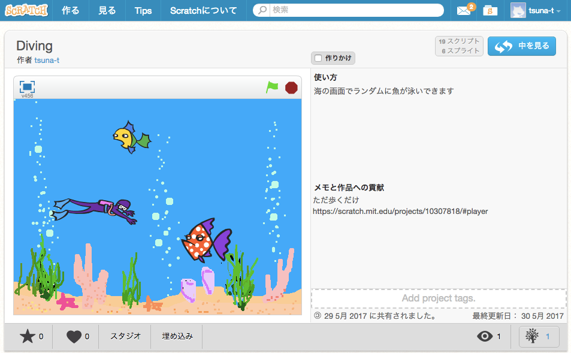
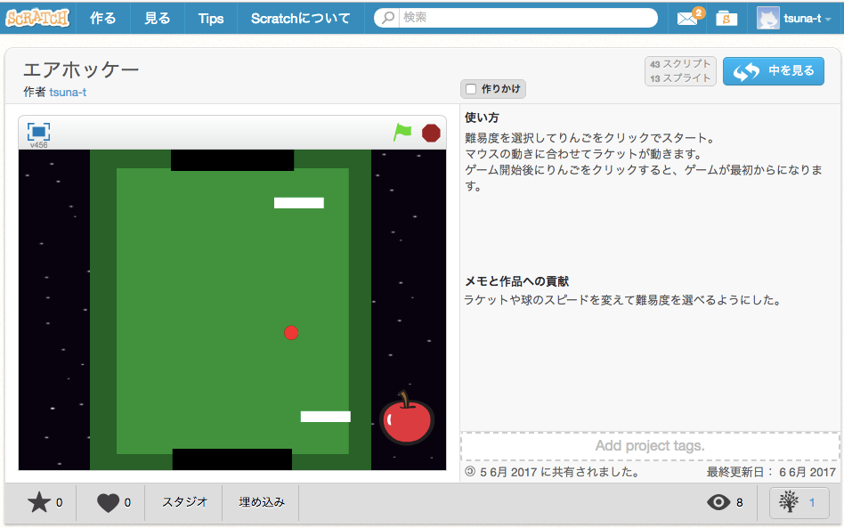

Work
スクラッチによるアニメーション課題を作りました。乱数を利用して、魚がランダムで出てきたり、毎回泳ぎかたが変わるようにするなど操作しなくても変化があるような作りになるよう工夫しました。
作品ページ キーボードの操作ではなく、マウスの動きを感知して操作するゲームを作りました。しっかりとゲームとして誰でも遊べるように難易度を選べるようにしました。
作品ページ 和風のフリー素材を使おうと思い、和食メインのカフェを考えました。
テーマをもっと尖ったものにしようと練りきりに絞ったカフェに変更しました。ヘッダー部分の画像が重なっている部分がなかなかうまくいかず苦労しました。
borderの形の変化など、デザインをメインに工夫するために取り入れました。今回もindex画面で重なった画像の配置が難しく、時間がかかって大変でした。